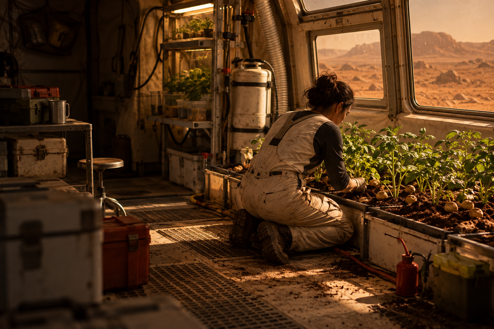

Corta para o cinema
E a horta de
Perdido em Marte?
No filme, Mark Watney fica sozinho em Marte e tenta sobreviver cultivando batatas.

Cena conceitual inspirada na premissa do filme.
Uma horta real exigiria água adequada, luz, nutrientes e um ambiente protegido.